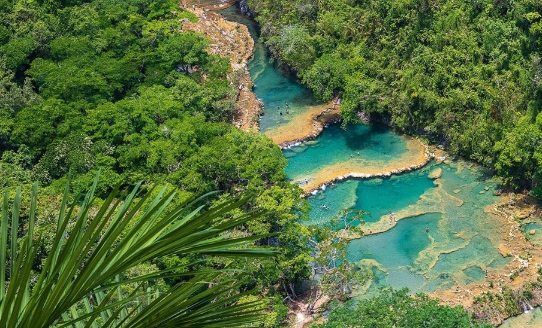
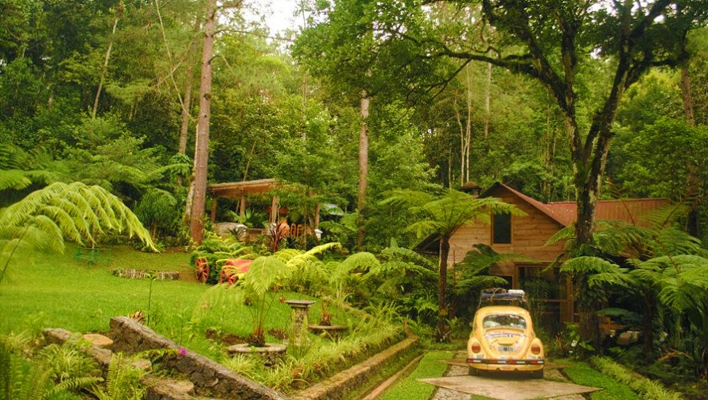
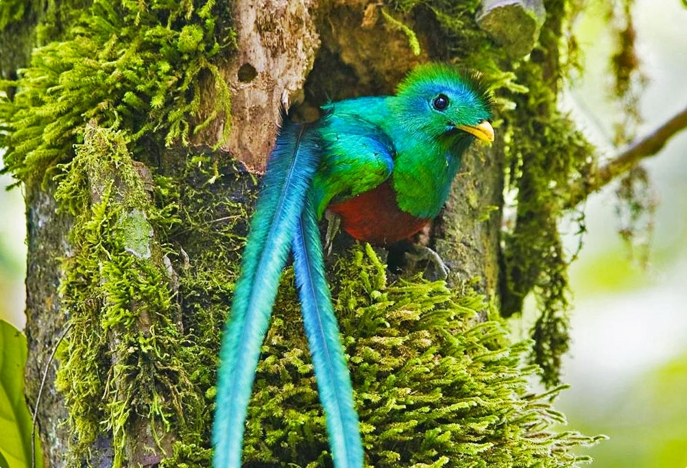
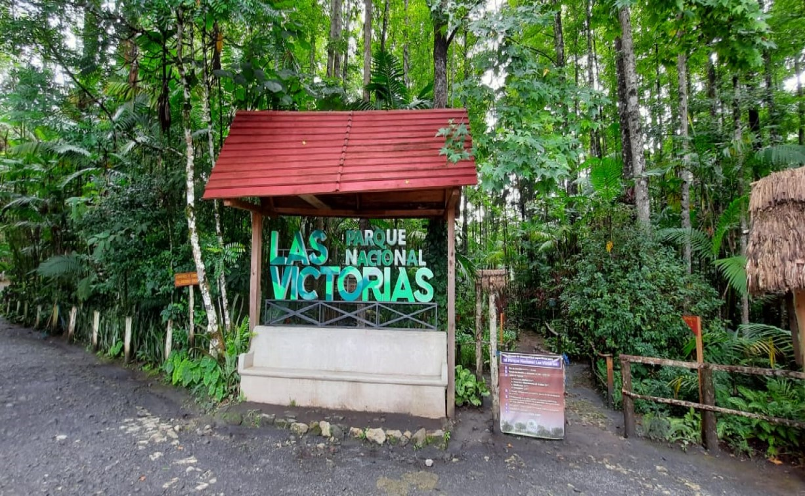
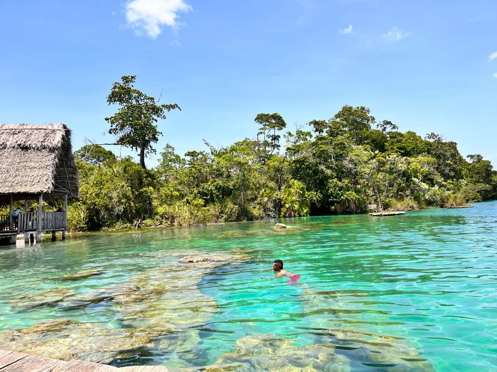

Puente natural con pozas de agua color turquesa y mirador, a aprox. 2 horas de Cobán.

Reserva natural dedicada al estudio y conservación de orquídeas.

Senderos para avistamiento de quetzales y flora local.

Espacio natural dentro de la ciudad ideal para caminatas.

Conocida como el "espejo del cielo", un parque nacional con agua cristalina.
